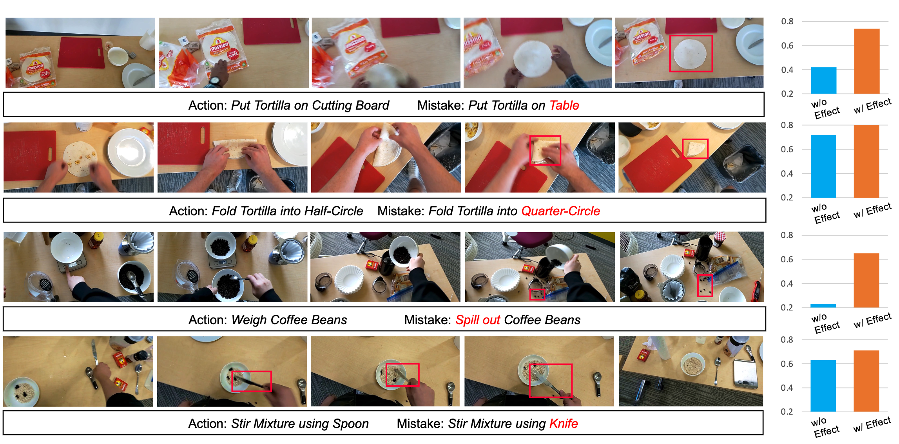
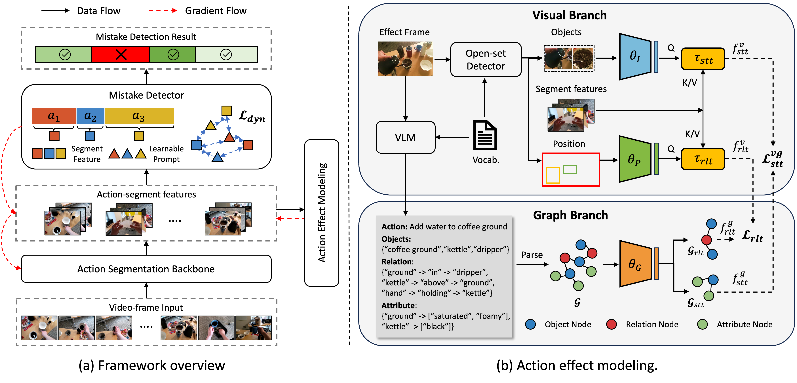
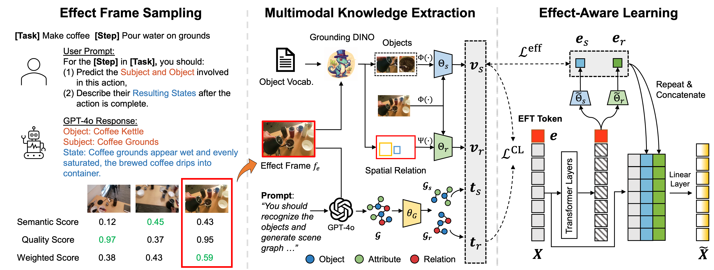
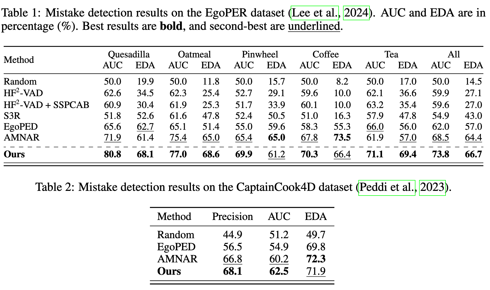

Qualitative Results
Effect-frame Sampling

Scene Graph Analysis

Mistake Probability

Mistake detection in procedural tasks is essential for building intelligent systems that support learning and task execution. Existing approaches primarily analyze how an action is performed, while overlooking what it produces, i.e., the Action Effect. Yet many errors manifest not in the execution itself but in the resulting outcome, such as an unintended object state or incorrect spatial arrangement.
To address this gap, we propose Action Effect Modeling (AEM), a unified framework that jointly captures action execution and its outcomes through a probabilistic formulation. AEM first identifies the outcome of an action by selecting the most informative effect frame based on semantic relevance and visual quality. It then extracts complementary cues from visual grounding and symbolic scene graphs, aligning them in a shared latent space to form robust effect-aware representations. To detect mistakes, we further design a prompt-based detector that incorporates task-specific prompts and aligns each action segment with its intended execution semantics.
Our approach achieves state-of-the-art performance on the EgoPER and CaptainCook4D benchmarks under the challenging one-class classification (OCC) setting. These results demonstrate that modeling both execution and outcome yields more reliable mistake detection, and highlight the potential of effect-aware representations to benefit a broader range of downstream applications.




If you find this work useful, please cite:
@inproceedings{
guo2026procedural,
title={Procedural Mistake Detection via Action Effect Modeling},
author={Wenliang Guo and Yujiang Pu and Yu Kong},
booktitle={The Fourteenth International Conference on Learning Representations},
year={2026},
url={https://openreview.net/forum?id=HsB5EuQOoS}
}